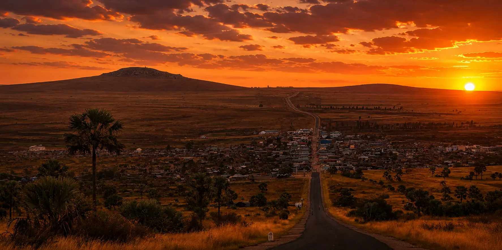
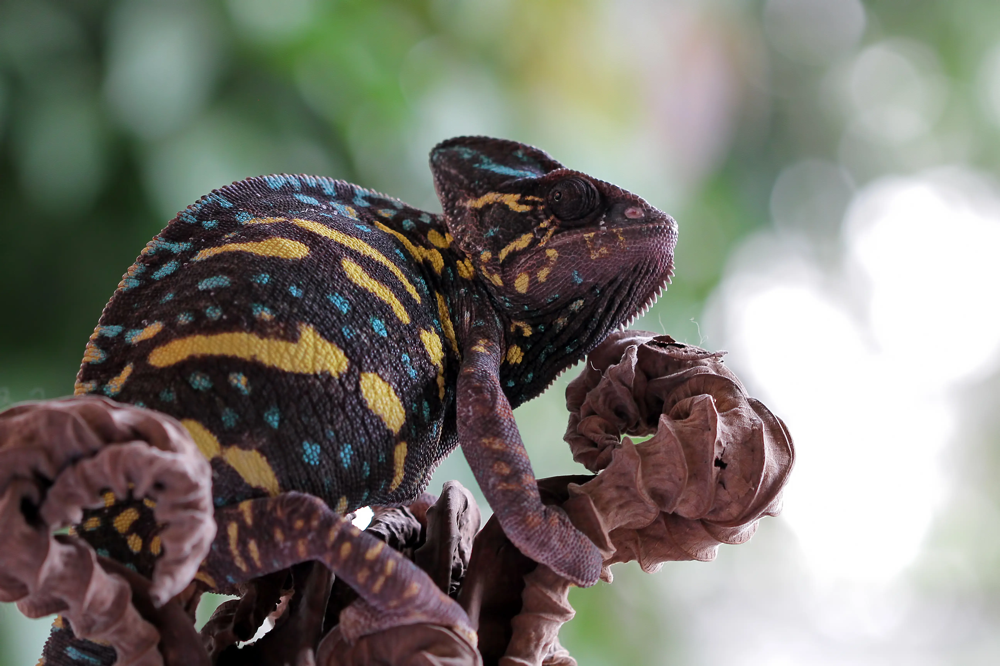

EXPANSION DE LA GALERIE
L'Âme de l'Île en Lumière
Chaque cliché est un souffle, une rencontre suspendue entre la terre rouge et l'horizon infini. Explorez les récits silencieux de Madagascar.

LA ROUTE OUVERTE
Route Nationale 7

CHRONIQUES DE LA FAUNE
Étude des Espèces Endémiques

PATRIMOINE BOTANIQUE
Flore Rare de la Forêt Tropicale

Connexions Humaines
Des interactions authentiques au cœur des marchés locaux, où le véritable esprit de l'hospitalité malgache brille à travers chaque sourire.